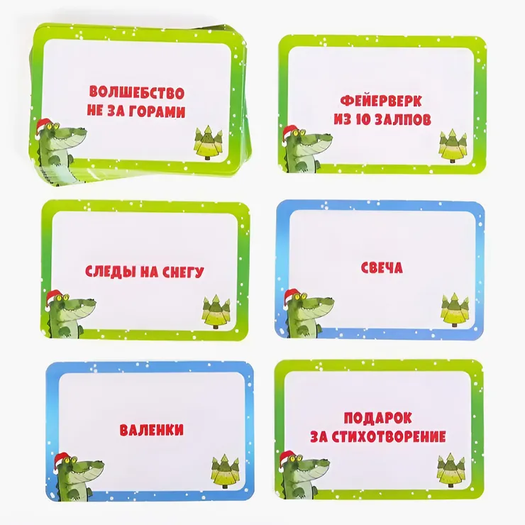
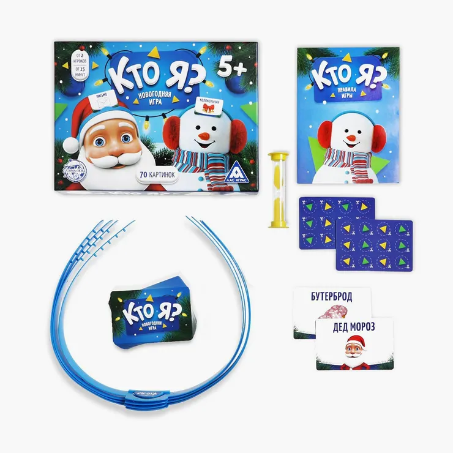
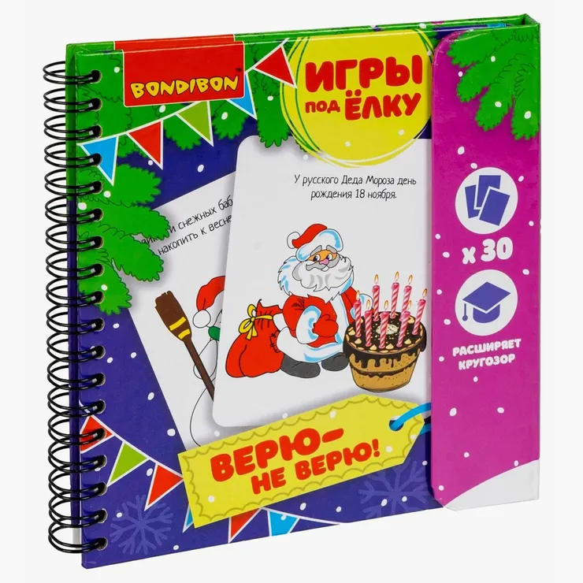
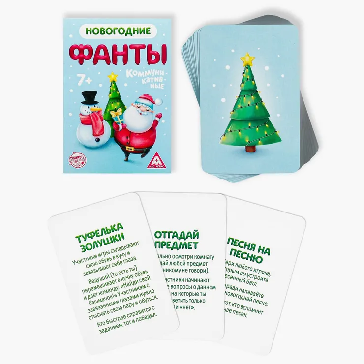

Новый год — главный праздник в году, который обычно встречают с семьей.
Чтобы торжество не превратилось в очередное застолье, предлагаем разнообразить его веселыми конкурсами и играми, которые понравятся и взрослым, и детям.
Чтобы торжество не превратилось в очередное застолье, предлагаем разнообразить его веселыми конкурсами и играми, которые понравятся и взрослым, и детям.
Новогодний «крокодил»
Количество участников: от 3
Что потребуется: карточки со словами или готовая игра
Как играть. Один игрок объясняет каким-либо образом слово, написанное на карточке, другие игроки отгадывают. Продается готовая игра, но можно сделать самим. Для этого нужно вырезать из картона карточки и написать на каждой новогоднее слово. Для игры на четырех человек достаточно 20—30 карточек.
Вот примеры слов на тему зимы и Нового года: елка, снеговик, подарок, звезда, Дед Мороз, Снегурочка, салют, гирлянда, снежинка, мандарин, сугроб, хоровод, бой часов, 1 января, маскарад, оливье, открытка, санки, коньки, шампанское, елочные игрушки, мишура, снег, бенгальские огни, полночь.
В готовых вариантах игры предусмотрены разные способы объяснения слов: при помощи пантомимы, рисунка или синонимов. Если вы используете самодельные карточки, то советуем выбрать один способ — например, пантомиму.
Правила такие: выбираете ведущего — «крокодила», который вытягивает слово и показывает его. Ему запрещено произносить звуки, читать слово губами или показывать буквы руками. Остальные игроки должны за определенное количество времени отгадать слово. Если слово угадано, ход переходит к другому игроку, а угадавший или его команда получают очки. О количестве очков за каждый верный ответ нужно договориться заранее, либо написать эту цифру на карточке.
Играть можно и в командах — если игроков много, и по отдельности — если в компании нечетное количество человек. Выигрывает тот участник или та команда, которая набрала больше всего очков.
Что потребуется: карточки со словами или готовая игра
Как играть. Один игрок объясняет каким-либо образом слово, написанное на карточке, другие игроки отгадывают. Продается готовая игра, но можно сделать самим. Для этого нужно вырезать из картона карточки и написать на каждой новогоднее слово. Для игры на четырех человек достаточно 20—30 карточек.
Вот примеры слов на тему зимы и Нового года: елка, снеговик, подарок, звезда, Дед Мороз, Снегурочка, салют, гирлянда, снежинка, мандарин, сугроб, хоровод, бой часов, 1 января, маскарад, оливье, открытка, санки, коньки, шампанское, елочные игрушки, мишура, снег, бенгальские огни, полночь.
В готовых вариантах игры предусмотрены разные способы объяснения слов: при помощи пантомимы, рисунка или синонимов. Если вы используете самодельные карточки, то советуем выбрать один способ — например, пантомиму.

Правила такие: выбираете ведущего — «крокодила», который вытягивает слово и показывает его. Ему запрещено произносить звуки, читать слово губами или показывать буквы руками. Остальные игроки должны за определенное количество времени отгадать слово. Если слово угадано, ход переходит к другому игроку, а угадавший или его команда получают очки. О количестве очков за каждый верный ответ нужно договориться заранее, либо написать эту цифру на карточке.
Играть можно и в командах — если игроков много, и по отдельности — если в компании нечетное количество человек. Выигрывает тот участник или та команда, которая набрала больше всего очков.
Удержи снежинку
Количество участников: от 2 человек
Что потребуется: вата
Как играть.Перед началом игры сделайте из ваты небольшие одинаковые шарики — снежинки — и раздайте всем участникам.
По сигналу нужно дуть на вату снизу вверх, чтобы «снежинка» задержалась в воздухе как можно дольше. Выигрывает тот, кто смог удержать ее дольше остальных.
Что потребуется: вата
Как играть.Перед началом игры сделайте из ваты небольшие одинаковые шарики — снежинки — и раздайте всем участникам.
По сигналу нужно дуть на вату снизу вверх, чтобы «снежинка» задержалась в воздухе как можно дольше. Выигрывает тот, кто смог удержать ее дольше остальных.
Кто я? Новогодний формат
Количество участников: от 2 человек
Что потребуется: стикеры и ручки или готовая игра
Как играть. В эту простую можно играть не вставая из-за стола. Каждый участник пишет на стикере новогоднее слово и приклеевает его ко лбу своего соседа справа. Главное, чтобы слова были одинаковой сложности и чтобы игрок ненароком не увидел слово, которое должен отгадать.
Затем игроки по очереди угадывают слова, которые приклеены к их лбам. Для этого они задают вопросы, на которые можно ответить только «да» или «нет». Например: «Это животное?», «Это зеленое?», «Это сделано из снега?». Побеждает тот игрок, который быстрее всех угадал написанное на лбу слово.
Что потребуется: стикеры и ручки или готовая игра
Как играть. В эту простую можно играть не вставая из-за стола. Каждый участник пишет на стикере новогоднее слово и приклеевает его ко лбу своего соседа справа. Главное, чтобы слова были одинаковой сложности и чтобы игрок ненароком не увидел слово, которое должен отгадать.
Затем игроки по очереди угадывают слова, которые приклеены к их лбам. Для этого они задают вопросы, на которые можно ответить только «да» или «нет». Например: «Это животное?», «Это зеленое?», «Это сделано из снега?». Побеждает тот игрок, который быстрее всех угадал написанное на лбу слово.

Мандариновые гонки
Количество участников: от 2 человек
Что потребуется: мандарины и варежки по количеству участников
Как играть. Раздайте всем участникам по паре варежек и одному мандарину. Игроки должны очистить мандарин, не снимая варежек. Выигрывает тот, кто быстрее всех справится с заданием.
Важно выбрать такие мандарины, которые легко чистятся. Варежки тоже должны быть примерно одинаковой толщины.
Что потребуется: мандарины и варежки по количеству участников
Как играть. Раздайте всем участникам по паре варежек и одному мандарину. Игроки должны очистить мандарин, не снимая варежек. Выигрывает тот, кто быстрее всех справится с заданием.
Важно выбрать такие мандарины, которые легко чистятся. Варежки тоже должны быть примерно одинаковой толщины.
Веришь или нет?
Количество участников: от 3 человек
Что потребуется: карточки с фактами или готовая игра
Как играть. Новогоднюю версию игры «Верю — не верю» можно купить на маркетплейсах или сделать свою. Для этого надо найти и выписать на карточки интересные факты о Новом годе.
Карточки выкладываются на середину стола текстом вниз. Один участник берет карточку и зачитывает утверждение. Например: у китайского Нового года нет точной даты. Остальные участники должны сказать, верят они этому утверждению или нет. Побеждает тот, кто даст больше верных ответов.
Если вы используете самодельный вариант игры, то тот, кто составлял задания, может быть ведущим. Остальные будут отгадывать.
Что потребуется: карточки с фактами или готовая игра
Как играть. Новогоднюю версию игры «Верю — не верю» можно купить на маркетплейсах или сделать свою. Для этого надо найти и выписать на карточки интересные факты о Новом годе.
Карточки выкладываются на середину стола текстом вниз. Один участник берет карточку и зачитывает утверждение. Например: у китайского Нового года нет точной даты. Остальные участники должны сказать, верят они этому утверждению или нет. Побеждает тот, кто даст больше верных ответов.
Если вы используете самодельный вариант игры, то тот, кто составлял задания, может быть ведущим. Остальные будут отгадывать.

Новогодние фанты
Количество участников: от 3 человек
Что потребуется: карточки с заданиями или готовая игра
Как играть. Нужно вырезать карточки из картона и написать задания — желательно связанные с Новым годом. Достаточно будет 20 штук. Карточки нужно перемешать и сложить в стопку текстом вниз.
Затем один из игроков тянет фант и зачитывает задание вслух. Задания могут быть такими:
спой новогоднюю песню;
расскажи новогоднее стихотворение;
изобрази Деда Мороза;
придумай и станцуй танец снежинки;
вырежи снежинку из бумаги;
крикни в окно: «Поздравляю всех с Новым годом!».
Баллы в этой игре не подсчитываются.
Что потребуется: карточки с заданиями или готовая игра
Как играть. Нужно вырезать карточки из картона и написать задания — желательно связанные с Новым годом. Достаточно будет 20 штук. Карточки нужно перемешать и сложить в стопку текстом вниз.
Затем один из игроков тянет фант и зачитывает задание вслух. Задания могут быть такими:
Баллы в этой игре не подсчитываются.

Новогодняя история
Количество участников: от 3 человек
Что потребуется: лист бумаги и ручка
Как играть. В эту игру можно играть двумя способами:
Придумайте первую фразу. Например, «Однажды в новогоднюю ночь…». Затем каждый участник добавляет по предложению, развивая историю. Предложения лучше всего записывать, чтобы не потерять нить повествования. Проигрывает тот, кто не сможет придумать продолжение.
Здесь тоже нужно придумать первую фразу. Затем каждый игрок добавляет по слову или словосочетанию. Следующий повторяет то, что сказал предыдущий, и добавляет свое. Проигрывает тот, кто не смог воспроизвести рассказ или придумать подходящее продолжение.
Что потребуется: лист бумаги и ручка
Как играть. В эту игру можно играть двумя способами: